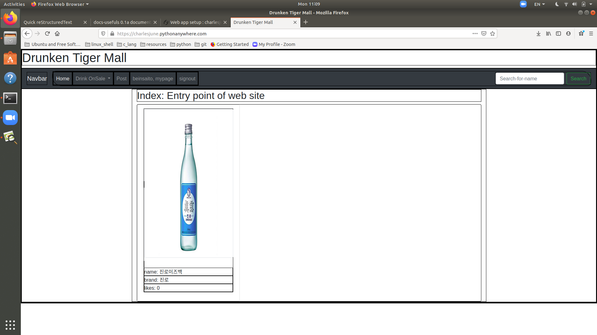
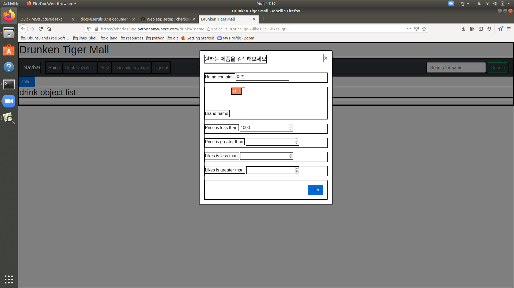
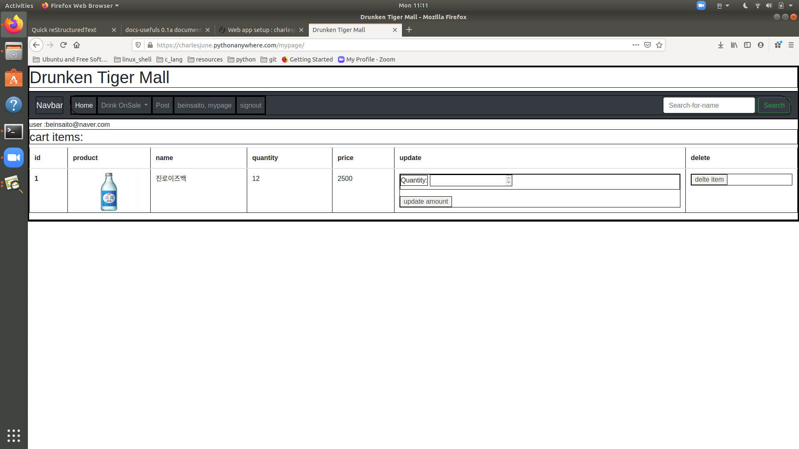
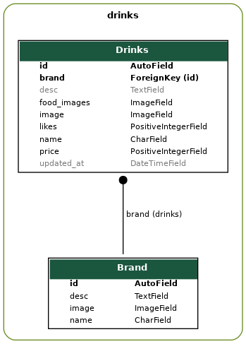
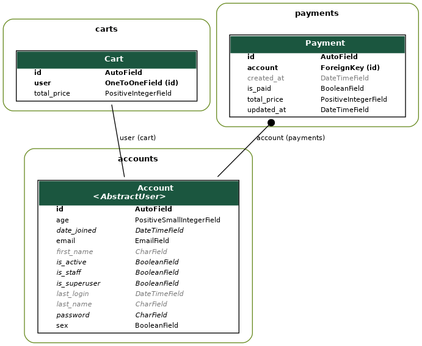
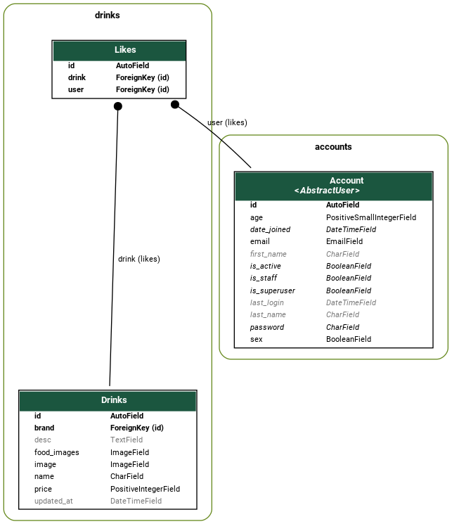

Drunken_tiger_mall Portfolio¶
1. Subject¶
Drunken-tiger-mall 온라인 주류 거래 사이트
2. Team members¶
date |
과정 |
|---|---|
~1week |
erd작성 및 앱설계, ORM 작성, dev-depenadancies 설정 |
~2week |
기본 모델 및 기능 프로토타이핑 |
~3week |
cart앱 구현, social login, 배포 |
3week~ |
payment앱 구현과 프론트 작업 |
3. Usage¶
Purchase
1. naver혹은 일반유저로 가입을 진행해야합니다.
2. 로그인이 되어있다면 원하는 상품을 디테일하게 확인할 수 있으며,
상품을 구매할 수 있습니다.
3. 원하는 상품을 filter를 사용하여 검색한 뒤, 상세페이지로 이동해주세요.
4. Quantity를 선택한 후, add to cart 해주세요.
5. Mypage에 접근하시면 본인의 cart를 확인할 수 있으며,
6. 해당목록에 대해서 구매를 원하면 Payment 버튼을 클릭해야합니다.
7. Payment가 지불되기 전까지 새로운 Payment를 생성할 수 없습니다.
liked products
1. naver혹은 일반유저로 가입을 진행해야합니다.
2. 로그인이 되어있다면 원하는 상품을 디테일하게 확인할 수 있으며,
상품을 좋아요 마크할 수 있습니다.
3. 제품을 like하고 싶다면 제품 리스트에 보이는 Like버튼을 클릭해주세요.
4. 같은 주소에서 like를 disable 하는 버튼을 통해 취소 할 수 있습니다.
4. features¶
추천수에 따른 제품 추천
상세 검색 필터링을 사용한 검색기능
소셜 로그인 기능
제품 장바구니 및 구매신청 기능
호스팅서비스플랫폼 활용-ttps적용
5. prototype views¶
초기 메인 화면
필터링 기능 화면
카트 목록 화면

6. database Model¶
6.1. Drinks & Brand¶
drinks 는 category로서 필터링 역할을 해줄 brand 를 참조합니다.
그 외에도 추천하는 음식과 좋아요, price등으로 검색이 가능하도록 구성되었습니다.
drinks 에서만 검색하는 것 뿐 아니라, brand 에 속하는 drinks 를 검색할 수 있습니다.
6.2. Cart & Payment¶
accounts 는 cutomized usermodel입니다. 기존 builtin usermodel과 유사하지만 BaseUser를 Overide하되,
소셜 로그인을 위해 email을 user-identity로 사용하며,
Annoymous user혹은 staff는 cart를 부여받지 않기 때문에 장바구니에 담기와 구매가 허용되지 않습니다.
carts에 저장된 목록이 payments로 전환되면 이전에 payments가 처리되기 전까지 새로운 payemnt를 만들 수 없습니다.
6.3. likes & account¶
한 유저는 모든 drinks 에 대한 1개의 like row 를 생성할 수 있습니다.
간단한 처리이며, 자신의 likes를 확보하고, likes를 ordering으로 활용하기 위한 용도로 구현하였습니다.
현재는 list_view 에서 로그인이 되어있는 상태라면 간단하게 button으로 toggle가능하도록 처리하고 있습니다.
7. code sample¶
프로젝트의 대부분의 url 에 매치되는 view 는 함수로 구현되었습니다.
프로젝트 규모 작을때 코드재활용에 대한 필요성이 적어지는 것과 직관적이라는 점,
그리고 규모가 작을 경우 최적화문제는 IO 에서 가장 두드러지기 떄문에
SQL Query 에 조금 더 신경쓸 수 있도록 하였습니다.
@require_GET
def main_view(request):
objects = Drinks.objects.all().order_by('-likes')[:16]
return render(request,template_name='drinks/index.html',context={"objects":objects})
@require_http_methods(["GET", "POST"])
def list_filter_view(request):
if request.method == "POST":
return toggle_like(request)
PAGE_SIZE = 1
objects = Drinks.objects.select_related('brand')
f = DrinkFilter(request.GET, queryset=objects) # 1.49ms
paginator = Paginator(f.qs, PAGE_SIZE)
page = request.GET.get('page')
try:
response = paginator.page(page)
except PageNotAnInteger:
response = paginator.page(1)
except EmptyPage:
response = paginator.page(paginator.num_pages)
return render(request,template_name='drinks/list.html',context={'filter':f, 'objects':response})
@login_required
def like_create_destroy_view(request):
pk = request.POST.get('drink_like')
drink = Drinks.objects.get(id=pk)
likes = Likes.objects.filter(user=request.user, drink=drink)
if likes:
likes.delete()
else:
likes = Likes.objects.create(drink=drink, user=request.user)
return HttpResponseRedirect(redirect_to=request.path_info)
@require_GET
def brand_detail_view(request, brand_name):
objects = Brand.objects.prefetch_related(Prefetch('drinks')).get(name=brand_name)
return render(request,template_name='drinks/brand.html', context={'object':objects})
@login_required
@require_http_methods(['GET', 'POST'])
def drink_detail_view(request, pk):
if request.method == 'POST':
amount = request.POST.get('quantity')
form = CartItemCreateForm(request.POST)
if form.is_valid():
user_cart = get_cart_and_items(request)
created = create_cart_item(pk, form.cleaned_data['quantity'], user_cart)
return HttpResponseRedirect(reverse_lazy('mypage:index'))
form = CartItemCreateForm()
return render(request, template_name="drinks/detail.html", context={'object':Drinks.objects.get(id=pk), 'form':form})
8. Concerns¶
Error
DB접근에 의한 과부하를 줄이기 위해서 어떻게 해야할까?
Note
- 한지훈
디버깅을 통해 페이지별로 전송되는 sql를 확인하여, 케이스에 따라
select_relatedprefetch_related등을 활용하여 최대한 중복쿼리를 제거한다.
Error
postgresql을 사용하기로 했던 계획에 대하여?
Note
- 한지훈
원래 Postgreql로 pythonanywhere를 db-server/web-server를 사용하려 했으나, 유료사용이라는 안내를 받음. 웹호스팅하는 상태에서 local db를 사용하는 것은 고려하지 않게되어 web서버에서 sqlite3 파일 db를 사용함.
Error
Payment orm 의 객체 생성조건을 상세히 처리하지 않아 새로고침 할떄마다 새로운 모델이 생성되는 문제를 어떻게 해결 할 수 있을까?
Tip
- 권혜주
<queryset-object>.filtermethod를 이용, 아래의 분기로 처리하여 원하는 행동을 구현하였습니다.유저가 존재하는 경우
유저가 존재하나 미결제
Payment가 존재하지 않을 경우
유저가 존재하지 않는 경우
Error
traceback 메세지를 확인해도 어느 지점을 수정해야하는지 찾기 어려웠던 점이 있었는데..
Tip
- 권혜주
에러 발생 위치, 에러 원인을 여러번 검토해보니, 에러에 대해서 어떻게 대처해야 하는지 체득하게 되었습니다.
Error
브라우저 테스트를 진행할 때 ERR_SSL_PROTOCOL_ERROR 이라는 알 수 없는 에러를 발견했을 때?
Note
- 이건영
SSL연결 오류를 해결하기 위해 Chrome을 시크릿 모드로 시작하고 시크릿 모드에서 SSL연결 오류가 있는 동일한 웹페이지를 로드한 뒤, 웹 페이지에 엑세스 할 수 있는 경우 확장 프로그램 중 하나에서 이 오류가 발생하는지 확인한 후 범죄자 확장을 찾아서 비활성화 하거나 확장을 제거하였습니다.
Tip
“웹 프로그래밍에서 웹 서버와 클라이언트를 동기화 하고 연결하는 것이 매우 중요하다는 것을 느꼈다.”
10. OpenSource References¶
저희가 사용한 의존라이브러리들은 아래와 같습니다.:
asgiref==3.2.10
certifi==2020.6.20
chardet==3.0.4
defusedxml==0.6.0
Django==3.1
django-allauth==0.42.0
django-extensions==3.0.5
django-debugtoolbar=3.0a2
django-filter==2.3.0
docutils==0.16
idna==2.10
importlib-metadata==1.7.0
oauthlib==3.1.0
Pillow==7.2.0
pkg-resources==0.0.0
pydot==1.4.1
pygraphviz==1.6
pyparsing==2.4.7
python3-openid==3.2.0
pytz==2020.1
requests==2.24.0
requests-oauthlib==1.3.0
sqlparse==0.3.1
urllib3==1.25.10
zipp==3.1.0